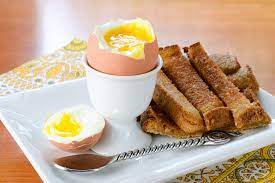

Eggs on toast

Description
A quick and easy meal!
Ingredients
Steps
- Place eggs in cold water and bring to boil. Simmer for 2 - 3 minutes.
- While eggs are cooking, toast bread
- Remove eggs from water and butter toast
- Cut toast lengthwise into strips to dip into egg yolk.